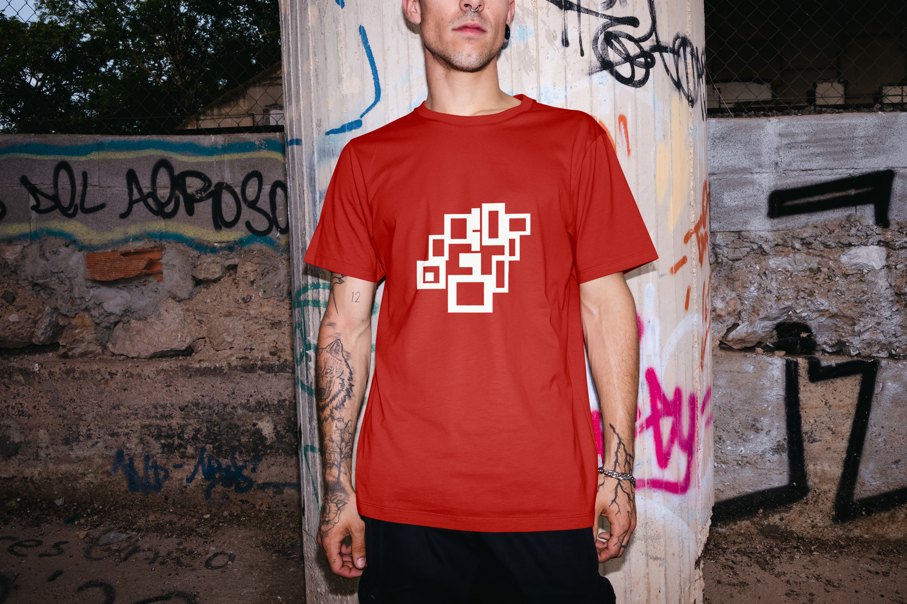
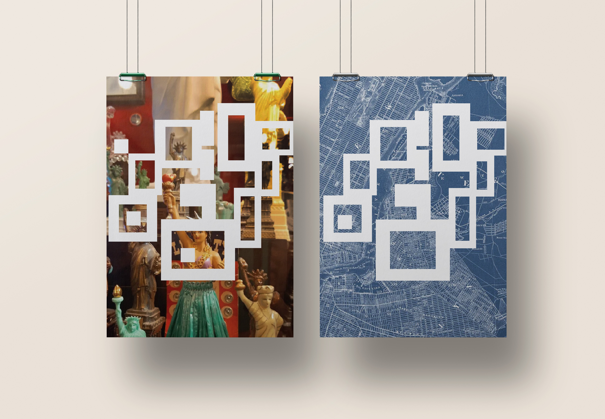
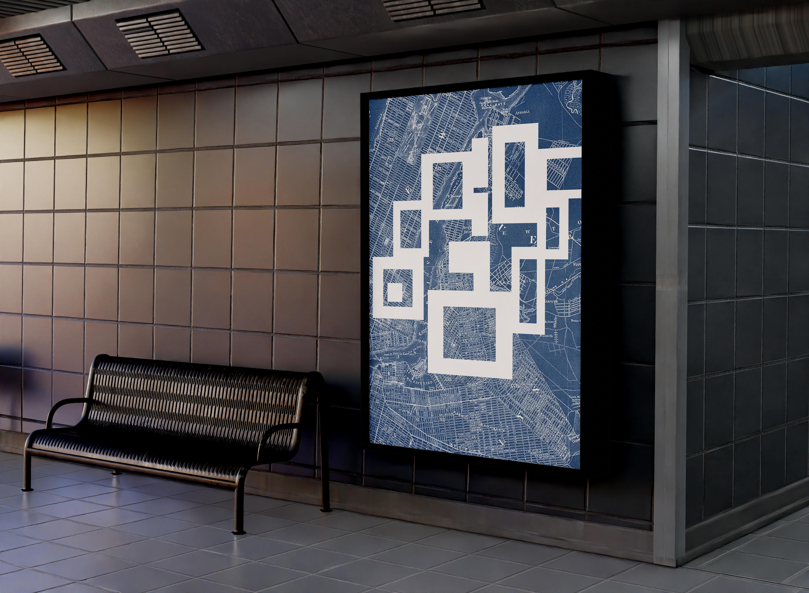

Sketch placeholder
Add concept sketches, thumbnails, or iteration sheets here.
Case Study · Design · 2025
City Reliquary is a community-driven museum devoted to preserving New York City's history through everyday objects and personal collections. Unlike traditional museums that focus on grand historical narratives, City Reliquary highlights overlooked artifacts, neighborhood stories, and urban ephemera.




Add concept sketches, thumbnails, or iteration sheets here.
Add studio, making-of, or work-in-progress images here.
Add presentation mockups, close-ups, or alternate views here.
The concept centers on the idea that history is constructed through collected fragments. The goal was to create a symbol-based logo that reflects the museum's unique method of storytelling — assembling individual objects into a layered cultural collage.
The identity translates the museum's cabinet-of-curiosities approach into a simplified symbolic mark. Rather than relying solely on typography, the design distills the idea of object accumulation into a unified emblem. The museum's initials — C and R — live within the negative space of the mark, subtly embedded into the composition without disrupting the overall form.
Layering, grouping, and contained composition reference the way artifacts are curated and displayed. The form suggests assembly and preservation, reinforcing the idea that many small stories come together to shape collective urban memory.
The supporting typography remains clean and structured, allowing the symbol to function as the primary identifier while maintaining clarity and institutional credibility without feeling formal or elite.
The final logo communicates preservation, personality, and plurality. It positions City Reliquary as both an archive and a living collection — a place where everyday objects carry cultural weight.
By transforming the idea of collage into a clear and scalable symbol, the identity visually reinforces the museum's mission to honor community memory and local culture as valuable history.